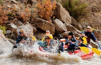

San Juan Water Rafting

The San Juan River, Utah
Enjoy a day trip of 26 miles from Sand Island to Mexican Hat, all while
expieriencing class 2 rapids, ancient ruins and petroglyphs!
 San Juan River, New Mexico
For those who would prefer a calm, slow paced enviroment,
than this trip is perfect for you! Whether you prefer to kayak or
fish on the water, there is enough fun for everybody!
San Juan River, New Mexico
For those who would prefer a calm, slow paced enviroment,
than this trip is perfect for you! Whether you prefer to kayak or
fish on the water, there is enough fun for everybody!
 San Juan River, Colorado
Ranging from easy to extreme, there is always a challenge
available for everyone willing to test their mettle.
San Juan River, Colorado
Ranging from easy to extreme, there is always a challenge
available for everyone willing to test their mettle.